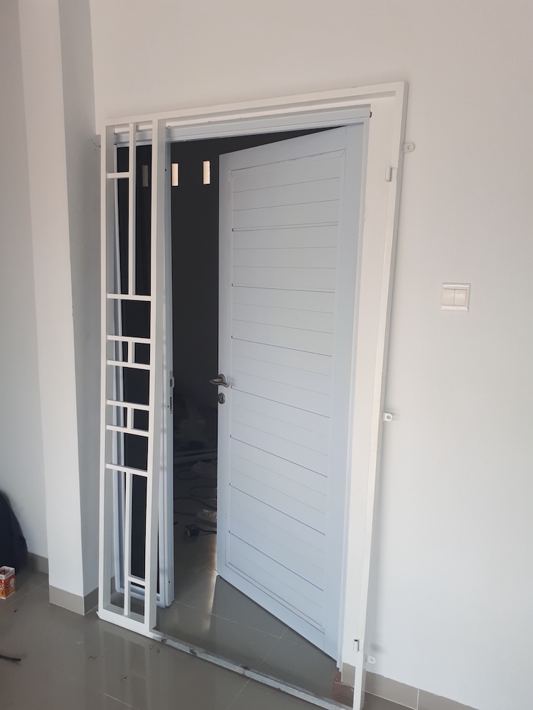
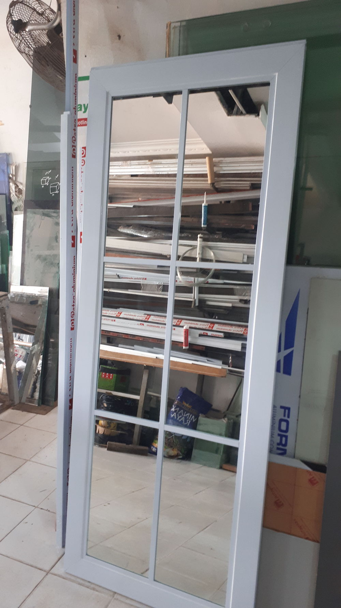
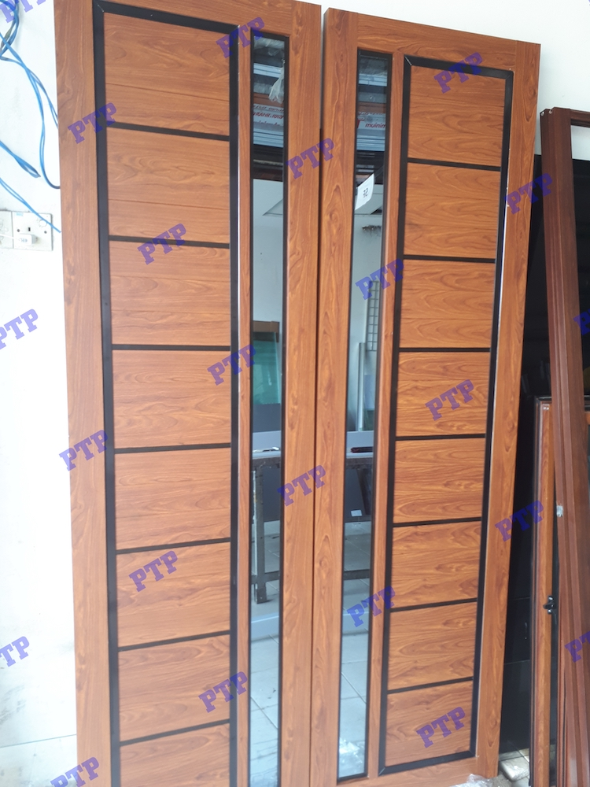
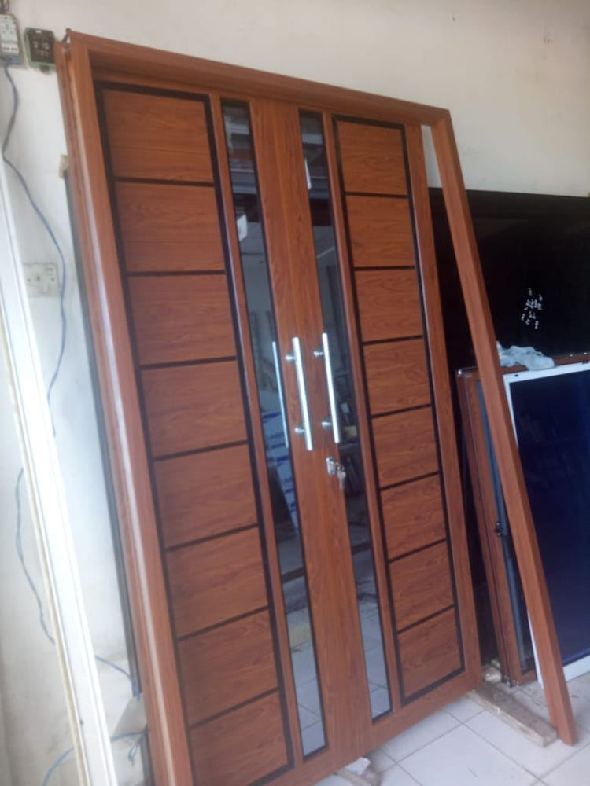
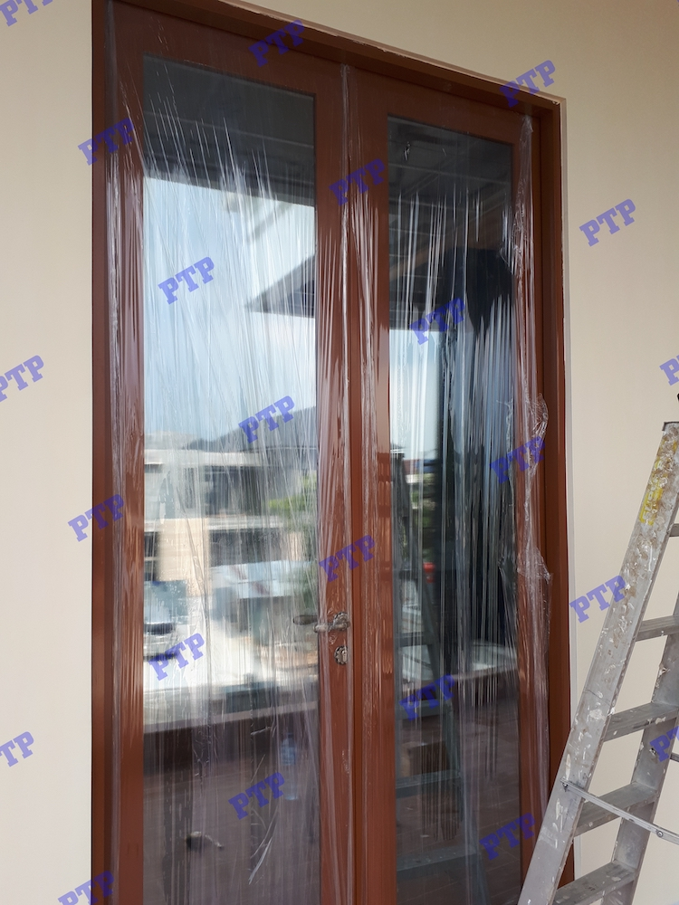
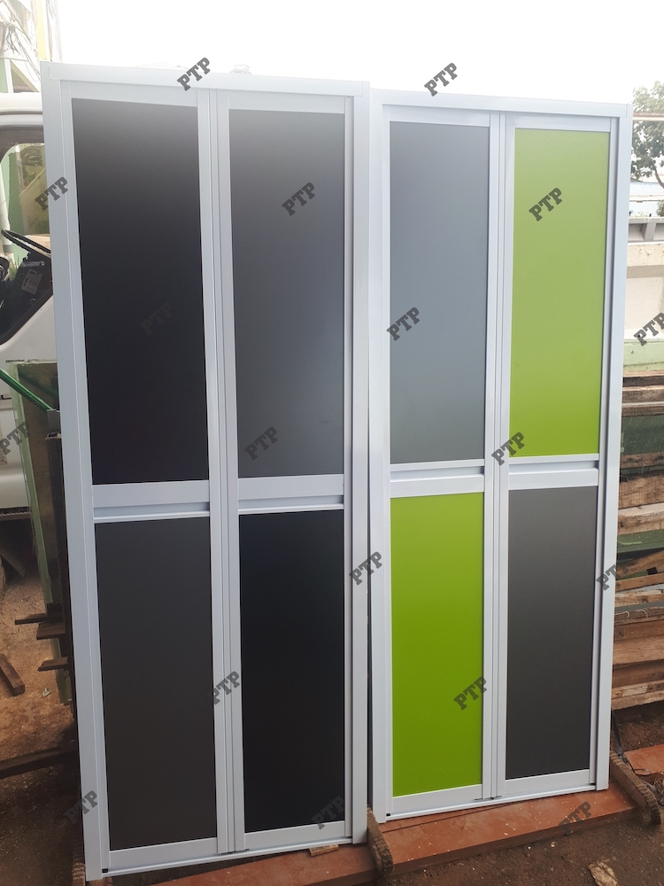
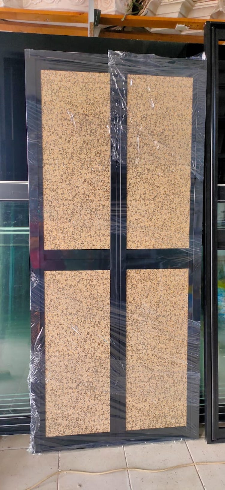

Pintu 01Model simpel dengan proporsi ramping.
Dari halaman WordPress lama, kategori pintu memuat berbagai model dengan proporsi yang berbeda-beda. Di versi statis ini, semuanya dirapikan ke dalam gallery yang lebih mudah dibaca agar calon pelanggan cepat menangkap gaya dan skala yang tersedia.

Model vertikal, panel ramping, atau kebutuhan ukuran custom bisa dibahas langsung saat konsultasi.








Hubungi 0813-6480-4864 supaya kebutuhan bukaan, ukuran kusen, dan jenis pekerjaan yang terkait bisa dibahas sekalian.